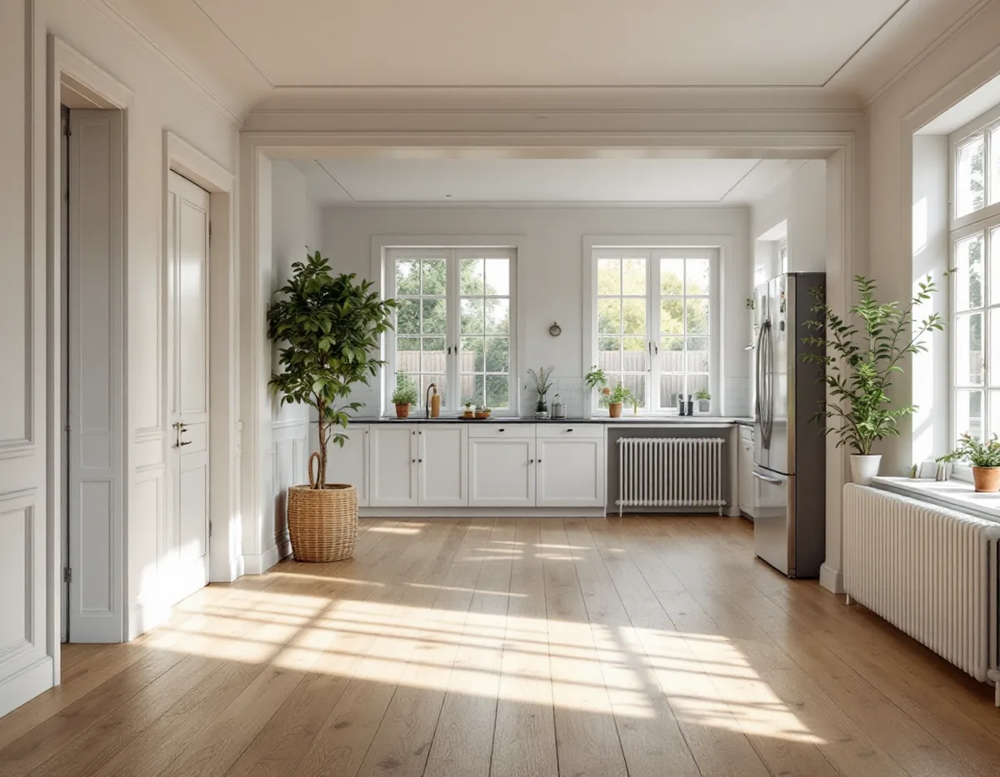
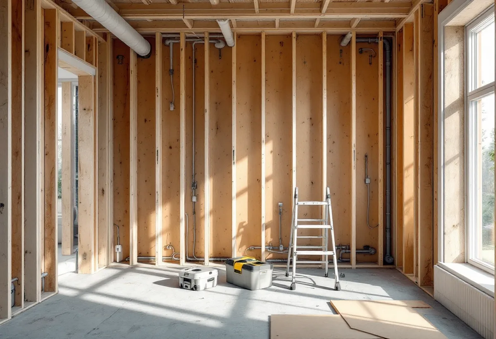

Platsbesök
Vi går igenom hela huset, öppnar där det behövs och ser hur stomme och installationer ser ut.
När kök, badrum, el, rör och ytskikt i en villa ska göras om samtidigt avgör ordningen mellan arbetena både tidplanen och slutresultatet. Geal Entreprenad AB tar totalrenoveringar i Brommas villor och radhus som en total entreprenad, med en kontakt för hela projektet från första rivningen till sista listen.

Stadens vägledning Varsam utveckling av småhus- och villaområden beskriver hur trädgårdsstäderna i Äppelviken, Ålsten och Smedslätten tillkom på 1920-talet, efter Gamla Enskede som var stadens första. Södra Ängby blev den sista stadsdelen som planerades efter trädgårdsstadens principer och är enligt vägledningen ett av Europas största sammanhängande områden av villor från 1930-talet i modernistisk stil. Ålstensgatan och Södra Ängby är dessutom utpekade som riksintressen.
Om trädgårdsstäderna skriver vägledningen också att många hus har förändrats interiört och byggts till genom åren för att bättre motsvara moderna behov. I stadens områdesfakta för 2025 ligger 911 av Ålstens 1 106 bostäder i småhus, och i Smedslätten 515 av 980.
För en totalrenovering betyder det att man sällan öppnar upp ett hus som bara har en historia. Bakom en vägg kan det finnas en dörr som satts igen, under golvet en rördragning från ett tidigare badrum. Staden påpekar att gamla ritningar kan vara ofullständiga och att det inte är säkert att de som byggde följde dem, så vi planerar arbetet först när vi har sett konstruktionen på plats.

Vi lägger upp en totalrenovering så att varje arbete görs medan det är lätt att komma åt. Först rivs det som ska bort och huset inventeras. Därefter görs eventuella ändringar i stommen, som nya öppningar eller förstärkningar. Medan väggar och bjälklag är öppna drar elektriker och rörläggare nya ledningar, och ventilationen ses över. Först när installationerna är klara byggs badrum och kök, och sist kommer golv, väggytor, innertak och snickerier.
Ordningen spelar roll för kvaliteten. Ett nytt golv som läggs innan rören är dragna riskerar att behöva brytas upp igen, och målade väggar tar skada av att elen dras efteråt. Därför tidsätter vi varje moment och bestämmer tillsammans med dig var i huset du kan bo, om du vill bo kvar under en del av tiden.
Många totalrenoveringar börjar med en ny planlösning. Stockholms stad skriver att det inte krävs bygglov för att flytta kök eller badrum. Däremot kan det behövas en anmälan och ett startbesked om flytten påverkar den bärande konstruktionen eller brandskyddet, om ventilationen installeras eller ändras väsentligt eller om en ny stam för vatten och avlopp tillkommer.
Ska badrummets ventilationskanal även användas som imkanal för köket behöver kanalens sammanlagda mått vara tillräckligt stort, och staden råder dig att tidigt rådgöra med skorstensfejarmästaren. Oavsett om flytten kräver anmälan eller inte ska arbetet enligt staden utföras så att de tekniska egenskapskraven i plan- och bygglagen uppfylls. Mer om just köket i äldre Brommahus finns under köksrenovering i Bromma, och om vind och bärande väggar under byggföretag i Bromma.
Boverket förklarar att förvanskningsförbudet i plan- och bygglagen gäller vid alla ändringar av en särskilt värdefull byggnad, både exteriört och interiört, och oavsett om åtgärden kräver lov eller anmälan. Det är samtidigt inget förändringsförbud – det är de egenskaper som gör byggnaden värdefull som är skyddade, och för att klarlägga dem kan sakkunnig hjälp behövas.
På Stadsmuseets karta kan du se om fastigheten är utpekad som kulturhistoriskt värdefull, men staden påpekar att alla byggnader inte är inventerade. Innan något rivs går vi därför igenom huset med dig och noterar sådant som kan vara värt att spara, till exempel dörrar, foder, trappor och fasta skåp. Det som ska vara kvar skyddas under arbetet. Badrummet beskriver vi närmare under badrumsrenovering i Bromma.
Vi går igenom hela huset, öppnar där det behövs och ser hur stomme och installationer ser ut.
Vi lägger upp rivning, stomme, installationer, rum och ytskikt i en tidplan.
Varje del redovisas för sig, så att du ser vad som är arbete och vad som är material.
Påverkas bärande delar, brandskydd, ventilation eller VA-stam görs en anmälan innan arbetet startar.
Vi samordnar alla moment, och el och VVS utförs via behöriga.
Vi går igenom huset rum för rum tillsammans med dig.
Skatteverket räknar det som rotarbete i ett småhus att riva väggar och bygga om planlösningen och att tilläggsisolera. Avdrag ges också för att montera fast köks- och badrumsinredning och installera vitvaror när det görs i samband med en omfattande renovering.
Företaget får dra av högst 30 procent av arbetskostnaden på fakturan. Rotavdraget är högst 50 000 kr per person och år och högst 75 000 kr tillsammans med rutavdrag. Material och resor ger inget avdrag. Geal drar avdraget direkt på fakturan.
Hur mycket som ska rivas, om stommen ändras, hur mycket el och rör som ska bytas och vilken standard kök, badrum och ytskikt får väger tyngst. Efter ett gratis platsbesök får du ett skriftligt kostnadsförslag.
Renovera hela huset eller lägenheten.
Villarenovering →Takbyte, takbesiktning och plåtarbeten.
Takläggare i Bromma →Trädgårdsstäder, tegel och funkistak.
Takrenovering i Bromma →Trädgårdsstad, karta och 30 m² inom plan.
Attefallshus i Bromma →Vind, bärande väggar och en andra bostad.
Byggföretag i Bromma →Kulörval och färgtyp i trädgårdsstaden.
Fasadmålning i Bromma →Småspröjs, småstugor och funkis i Bromma.
Fönsterbyte i Bromma →Småstugornas fönster, kitt och linoljefärg.
Fönsterrenovering i Bromma →Slipa furugolvet och behandla med lut och såpa.
Golvslipning i Bromma →Kupor, låga tak och bleck i Bromma.
Plåtslagare i Bromma →Lertegel, småstugor och solceller i Bromma.
Takbyte i Bromma →Spara och ersätta gamla tapeter.
Tapetsering i Bromma →Småstugor, trädgårdsstad och prickmark.
Tillbyggnad i Bromma →Trävillor, småstugor och funkisvillor.
Badrumsrenovering i Bromma →Trädgårdsstäder, småstugor och funkis i Bromma.
Fasadrenovering i Bromma →Villor i trädgårdsstäderna och lägenheter i smalhus.
Golvläggare i Bromma →Imkanal, småstugor och trävillor.
Köksrenovering i Bromma →Fasad och interiör i Brommas villastäder.
Målare i Bromma →Verandor, entréer och altaner.
Snickare i Bromma →